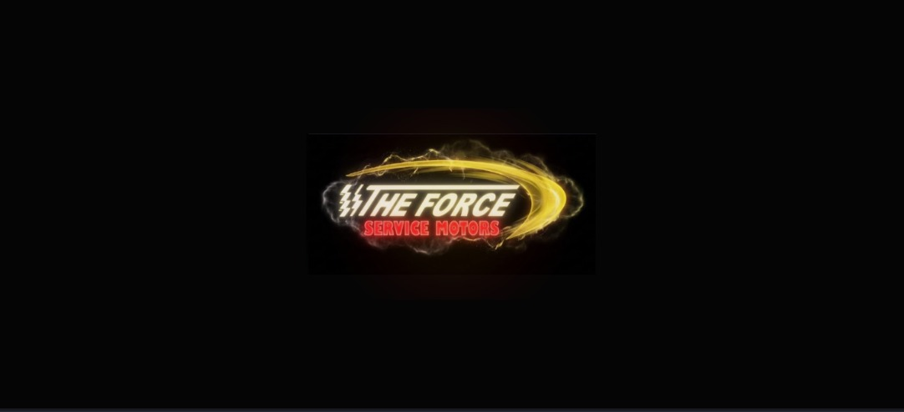
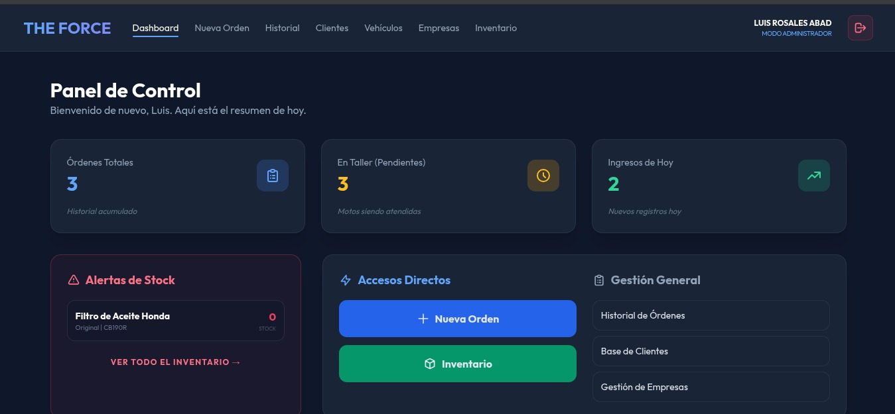
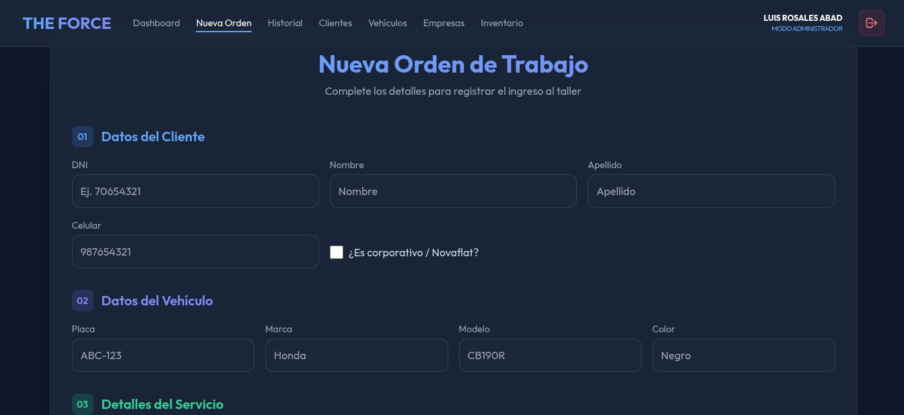
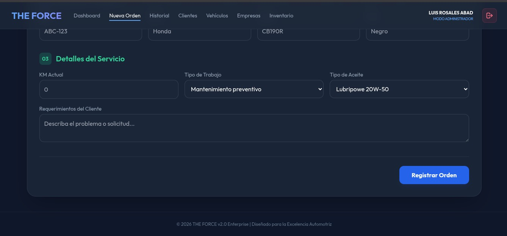
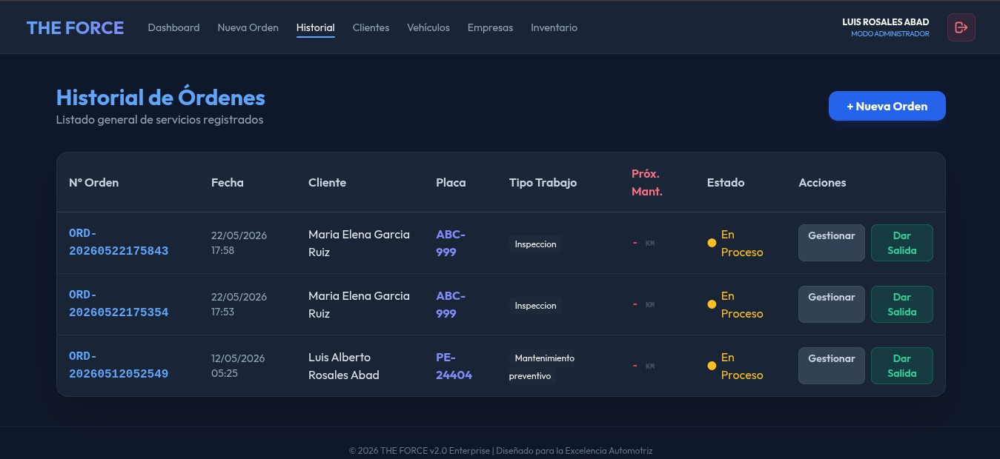
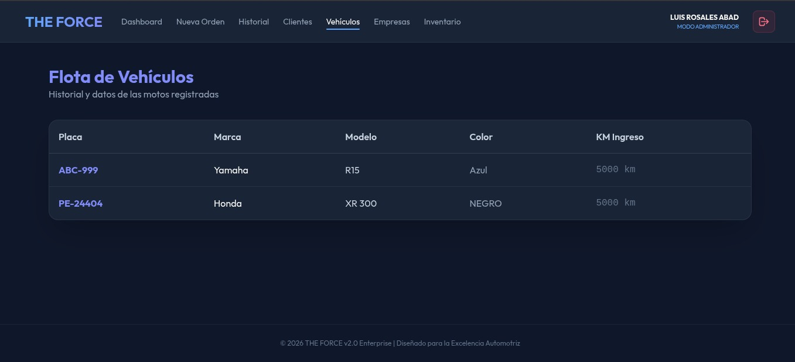
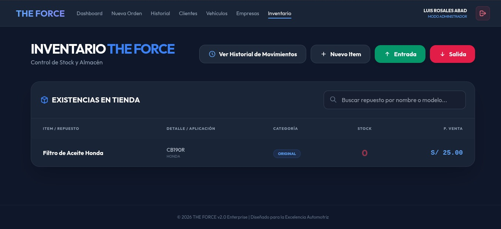

Pantalla de Carga Animada (Splash Screen)

Análisis Técnico de la Evidencia
- Comportamiento del Cliente: Bloquea la pantalla completa mediante capas superpuestas con un color hexadecimal puro
#050505para simular el espacio. - Lógica de Animaciones CSS: Aplica transformaciones sutiles de escala a través de la propiedad
transform: scale()en sincronía con gradientes radiales interactivos en tonos dorados y carmesíes. - Control por Hilos: Utiliza el ciclo asíncrono del navegador mediante un retardador JavaScript de 2.5 segundos, previniendo redirecciones cíclicas y otorgando un flujo visual limpio hacia el panel.
Panel de Control e Indicadores Centrales (Dashboard)

Análisis Técnico de la Evidencia
- Control de Sesión Activa: Muestra en la barra superior el nombre del operador autenticado con privilegios máximos de superusuario en modo de administración.
- Tarjetas de Rendimiento (KPIs): Se renderizan de forma reactiva tres métricas cuantitativas clave del backend: Órdenes Totales, Vehículos en Taller y Contador de Ingresos del Día.
- Control Crítico de Almacén: El núcleo ejecuta consultas automáticas de stock. Al hallar existencias en 0 (cero), genera un recuadro de aviso con bordes rojos que previene el agendamiento erróneo de mantenimientos.
Módulo de Captura y Registro de Órdenes Técnicas


Análisis Técnico de la Evidencia
- Segmentación de Datos: Divide el formulario en tres fases lógicas inmutables: Datos Personales (validando campos de DNI y teléfono corporativo), Datos de la Unidad (Placa, Marca, Modelo y Color) y Descripción del Trabajo.
- Normalización de Insumos: Despliega listados predefinidos para la asignación controlada del tipo de lubricante (ej: Lubripower) y la tipología del servicio requerido.
- Persistencia Remota: El botón de registro transforma las entradas HTML en un objeto JSON estructurado mediante un método
POSTasíncrono dirigido hacia el controlador en FastAPI.
Bitácora Histórica y Auditoría de Servicios

Análisis Técnico de la Evidencia
- Generación de Llaves Únicas: Cada registro de mantenimiento concibe una cadena alfanumérica única basada en la estampa de tiempo en el formato universal
ORD-YYYYMMDD.... - Mapeo de Estados: Evalúa y colorea de forma condicional los estados mediante CSS dinámico. Las órdenes con trabajos en ejecución se destacan con un rótulo brillante en estado En Proceso.
- Acciones del Operador: Integra llamadas lógicas individuales por fila que ejecutan el cierre contable del servicio o permiten auditar las notas de los mecánicos encargados.
Control de Flota de Vehículos Registrados

Análisis Técnico de la Evidencia
- Indexación por Matrícula: Organiza la tabla de datos de forma relacional utilizando las Placas de rodaje de las motos como claves de búsqueda de alta prioridad.
- Datos de Control Técnico: Asocia de forma directa los modelos de alta demanda (ej: Yamaha R15, Honda XR 300) junto a sus kilometrajes exactos de ingreso, dato esencial para los ciclos de garantía de repuestos.
Administración Física de Almacén e Inventario de Repuestos

Análisis Técnico de la Evidencia
- Filtrado Dinámico: Incorpora una barra superior con lógica de búsqueda predictiva capaz de clasificar repuestos por compatibilidad de motor o marcas asociadas.
- Gestión de Suministros: Expone accesos directos codificados por color para registrar compras externas (Entrada) o reducciones manuales por merma (Salida).
- Control de Precios y Categorías: Clasifica los productos por calidades (ej: repuestos Originales) mostrando el coste público formateado en moneda local.
🛠️ Historial de Solución de Conflictos en el Entorno Local
Conflicto de Bloqueo de Puerto de Red (Errno 98)
Al arrancar el entorno local con python main.py, el servidor web abortaba debido a que una instancia en segundo plano de ejecuciones pasadas se encontraba usando el puerto 8000. Se solventó rastreando el socket TCP y eliminando forzosamente la señal mediante comandos POSIX en terminal: fuser -k 8000/tcp.
Error de Carga y Mapeo de Archivos Multimedia Estáticos
Las vistas HTML no lograban resolver la ruta directa de la imagen del logotipo, mostrando un icono de recurso roto. Se solventó implementando el módulo nativo de FastAPI StaticFiles en el script principal de Python, aislando los activos públicos en el directorio /static y modificando las etiquetas a rutas absolutas del servidor.